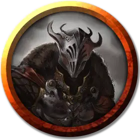

Залтар Сумеречная тень
Zalthar Shadowdusk
Средняя Нежить, хаотично-злая, именной НИП

Класс Доспеха 20 (латный доспех, щит)
Хиты 180 (19к8 + 95)
Скорость 30 футов
| мод | спас | ||
|---|---|---|---|
| СИЛ | 20 | +5 | +5 |
| ЛОВ | 11 | +0 | +6 |
| ТЕЛ | 20 | +5 | +5 |
| мод | спас | ||
|---|---|---|---|
| ИНТ | 12 | +1 | +1 |
| МДР | 16 | +3 | +9 |
| ХАР | 18 | +4 | +10 |
Иммунитет к урону некротическая энергия, яд
Иммунитет к состояниям отравление, истощение, испуг
Чувства тёмное зрение 120 футов, пассивное Восприятие 13
Языки Общий, Бездны, Глубинная речь
Опасность 17 (18000 опыта)
Бонус мастерства +6
Особенности
Сопротивление магии. Залтар совершает с преимуществом спасброски от заклинаний и прочих магических эффектов.
Особое снаряжение. Залтар владеет длинным мечом - вором девяти жизней [nine lives stealer] с 5 оставшимися зарядами.
Предводитель нежити. Если Залтар дееспособен, он и все существа-нежить по его выбору в пределах 60 футов от него совершают с преимуществом спасброски от эффектов, изгоняющих нежить.
Использование заклинаний. Залтар является заклинателем 19-го уровня. Его базовой характеристикой является Харизма (Сл спасброска от заклинания 18, +10 к попаданию атаками заклинаниями). У него подготовлены следующие заклинания паладина:
• 1 уровень (4 ячейки): вызов на дуэль [compelled duel], палящая кара [searing smite], приказ [command];
• 2 уровень (3 ячейки): магическое оружие [magic weapon], удержание личности [hold person];
• 3 уровень (3 ячейки): рассеивание магии [dispel magic], стихийное оружие [elemental weapon];
• 4 уровень (3 ячейки): поиск существа [locate creature], оглушающая кара [staggering smite];
• 5 уровень (2 ячейки): разрушительная волна [destructive wave] (некротическая энергия).
Натура нежити. Залтару не нужен воздух, еда, питье и сон.
Действия
Мультиатака. Залтар совершает три атаки длинным мечом.
Вор девяти жизней. Рукопашная атака оружием: +13 к попаданию, досягаемость 5 футов, одна цель. Попадание: Рубящий урон 11 (1к8 + 7), или рубящий урон 12 (1к10 + 7), если используется двумя руками, плюс урон некротической энергией 18 (4к8).
Сгусток адского пламени (1/день). Рыцарь смерти бросает шар магического огня, который взрывается в точке, которую он видит в пределах 120 футов от себя. Все существа в сфере с радиусом 20 футов с центром на этой точке должны совершить спасбросок Ловкости Сл 18. Эта сфера огибает углы. Существо получает урон огнём 35 (10к6) и урон некротической энергией 35 (10к6) при провале, или половину этого урона при успехе.
Реакции
Парирование. Залтар добавляет 6 к КД против одной рукопашной атаки, которая должна попасть по нему. Для этого рыцарь смерти должен видеть атакующего, и должен использовать рукопашное оружие.
Описание
В кресле, лицом к северной и западной дверям, сидит Залтар Сумеречная Тень - рыцарь смерти в черных доспехах. В своих иссохших руках он держит две крошечные раскрашенные деревянные фигурки.
Авантюристы прерывают Залтара в момент размышлений, и он считает их присутствие личным оскорблением.
Когда непрошеные гости входят в его комнату, Залтар встает, обнажает меч и со словами: "Дезмир предсказала ваше прибытие. Я долго ждал", атакует авантюристов.